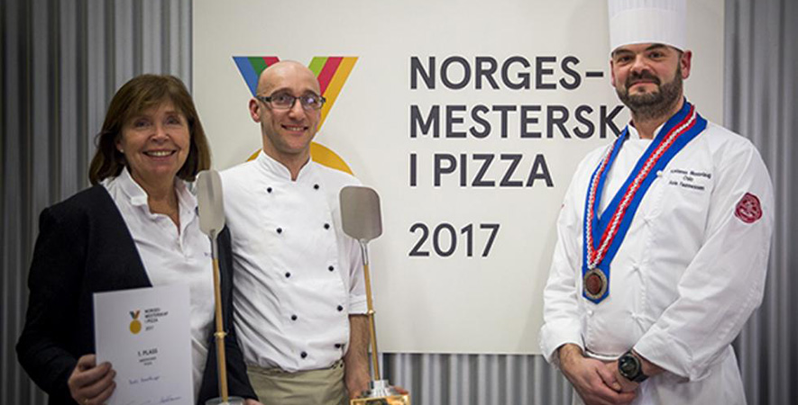

Askers første pizzarestaurant - etablert i 1983
Det var Kjellaug Hasselknippe, som etter å ha flyttet hjem fra Amerika, startet opp Pizzastua med sin venninne Ingebjørg.
Kjellaug hadde jobbet i hotellbransjen i mange år og ønsket å starte noe eget – noe nytt. På menyen var det kun ni pizzavarianter – satt
sammen etter hva de hadde smakt i Amerika, Italia og andre steder – for Kjellaug og hennes mann Ivar har testet mange av verdens smaker da de
sammen reiste jorden rundt for SAS. De virker kanskje ikke så nytenkende i dag, de første 9 variantene på menyen, men pizza var i seg selv var
ganske nytt i Norge for 30 år siden.
Alltid på jakt etter nye smaker
Siden har menyen økt i takt med våre egne reisevaner. Nye smaker blir oppdaget – og det meste passer på en pizza.
En reise til Thailand satte chili og hvitløk til rekene, og chèvren ble med hjem fra Frankrike. Inspirasjonen finnes på de underligste
steder og vi slutter aldri å lete. Hver måned har vi en ny månedens gourmet, hvor vi eksperimenterer med spennende varianter. Belønningen
er fornøyde gjester som deler entusiasmen over den gode pizzaopplevelsen.

Hele Hasselknippe-familien har alltid vært innvolvert i Pizzastua. Mann og barn, nevøer og nieser. Alle bidrar med både ideer og
smaksprøving, også er de heldigvis gode servitører og pizzakokker. Det har forsatt i den neste generasjonen også. Eldstedatter Bodil har drevet
med sin mor, søster og kusine – i lengre og kortere perioder, men står i dag alene for driften. Av og til med stor hjelp fra sin mann og sine barn.
Akkurat som sin mor.
Familiedrevet restaurant
Norgesmester 2011 og 2017
På SMAK 2011 i februar ble Bodil Hasselknippe kåret til Nasjonal Mester 2011 i klassen amerikansk pizza. Vi er stolte over å kunne
tilby dere Norges beste amerikanske pizza. Tomazs Tomala og våre italienske pizza gjorde det også sterkt med pallplassering i italiensk klasse og
en sterk andreplass i åpen klasse der vi stilte med vår egen dessertpizza. Igjen 2017 Vant Bodil Hasselknippet.
Kom innom og smak på våre vinnerpizzaer!
